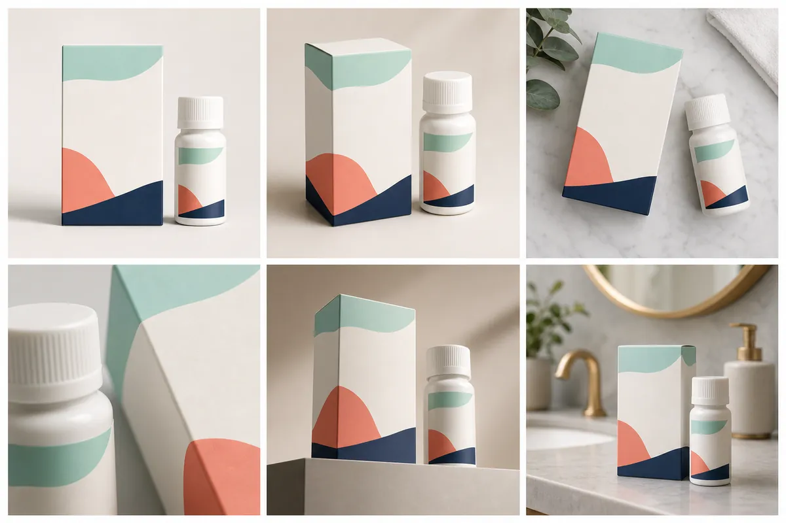
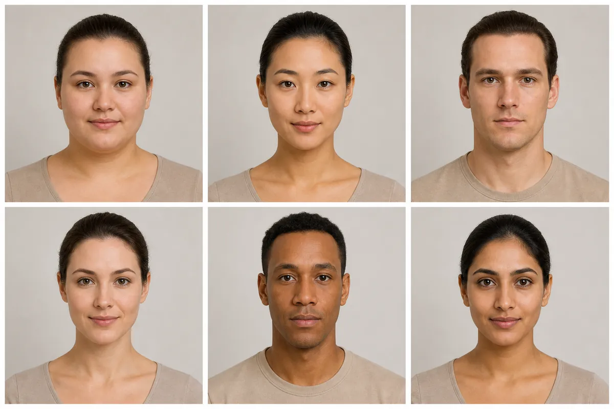
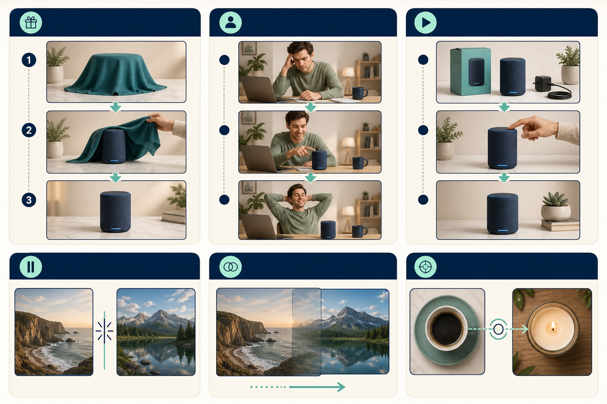
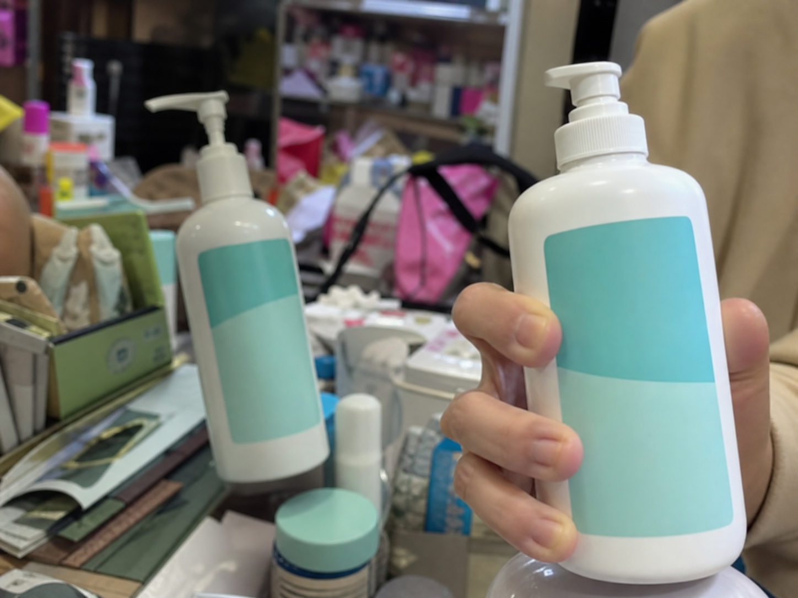
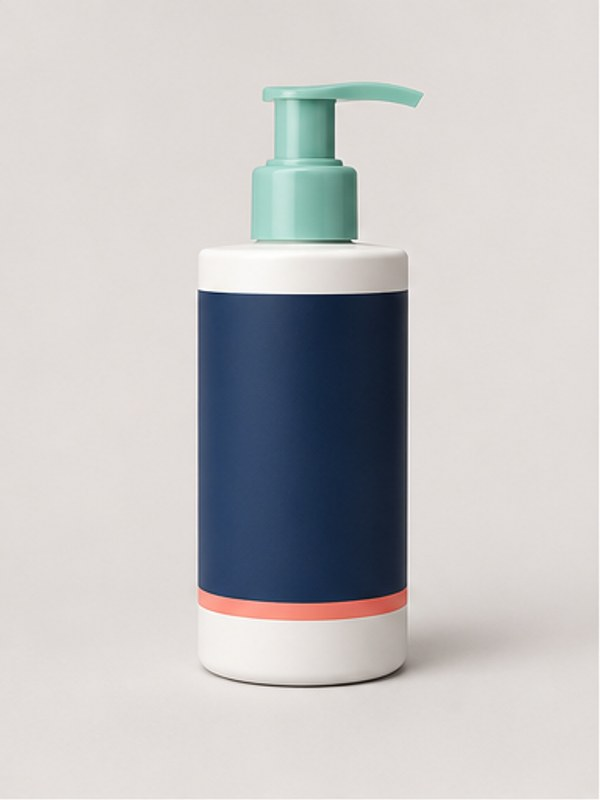
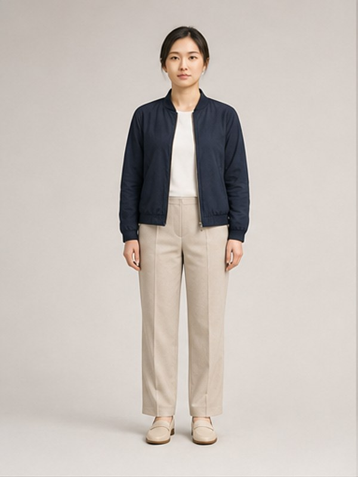
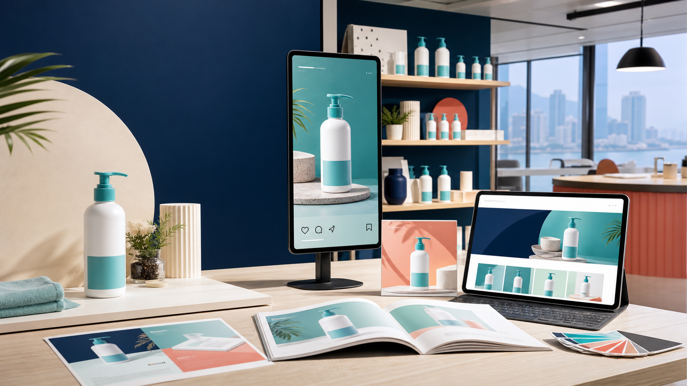

Product Setting
What must stay accurateDefines the product shape, packaging, colours, label zones and features that cannot change.
A video prompt alone is not enough. Product, character, storyboard and video settings work together to keep every shot accurate, consistent and useful.
Build these four parts in order. Each one supplies information needed by the next stage.
Defines the product shape, packaging, colours, label zones and features that cannot change.
Defines the same person’s face, age, hair, clothing, role and personality across every shot.
Breaks the idea into scenes with a visual description, action, camera direction and voiceover.
Combines timing, camera movement, lighting, pacing, transitions and continuity constraints.
AI can change packaging, colours and small details between frames. Product Setting gives it a fixed reference.
Without a character sheet, the person can look different in every scene.
It controls what the audience sees and hears instead of asking the model to invent the story.
It translates the storyboard into technical direction for the video-generation model.

A front view is best for packaging accuracy. Three-quarter views add depth. Top-down views help demonstrations, while macro views highlight texture and details.

Face shape is one part of a repeatable character specification. Age, build, hair, clothing and expression must also remain consistent.

A product reveal, problem-to-solution story and tutorial each need different scenes. Transitions should support the intended pace, not distract from the product.
Every scene should answer these questions before video generation begins.
A vague prompt leaves the model to guess. A production prompt fixes the product, character, composition, ratio and guardrails before generation.

Each setting answers a different production question. Scroll through the sequence before building your own prompt.

What must stay accurate?

Who must stay recognisable?
What happens in each scene?

How should it move and finish?
Choose the destination first so important product and copy areas are not cropped later.